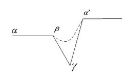

Спиральная Динамика – это развитие теории американского психолога К. Грейвза, возникшей в 70-е годы XX века. Напомню основные положения доктора К. Грейвза: он утверждал, что человек - это открытая развивающаяся система, что адаптационные возможности нашего мозга неограниченны, и в ответ на изменившиеся условия жизни люди развивают системы преодоления и изменяют собственный уровень психологического существования (Подробно об уровнях существования я уже писала в своих предыдущих статьях в ПГ от 15.06.06 и от 12.04.07 г.г.).
24-28 апреля 2008 г. в Москве состоялся первый в России сертификационный семинар по Спиральной Динамике (SD-1), который провели Крис Кован, один из создателей Теории Спиральной Динамики, и доктор Наташа Тодорович. Этот семинар был организован Международным Ноэтическим Институтом Интегрального Внимания (США-Россия). Это уже второй приезд К. Кована и Н. Тодорович в Москву (первый был год назад с вводным семинаром по Спиральной Динамике). Такая периодичность говорит о том, что Спиральная Динамика, которая приходит в Россию с помощью Ноэтического института - не только культуральное явление, а методология, которая становится востребованной и в России.
Согласно теории К. Грейвза, развитие идет по двойной спирали: внешняя спираль – это условия жизни, проблемы, с которыми мы сталкиваемся, исторический период времени, в который мы живем, место нашего проживания, обстоятельства, в которых мы находимся в социуме; внутренняя спираль – это наши биологические особенности, неврология, психология, когнитивные процессы, т.е. наши способности ума, через которые мы «просеиваем» внешний мир. Внешние условия постоянно взаимодействуют с внутренними способностями, возникающая при этом взаимодействии позиция, установка и определяет уровень существования. Причем уровни описывают не то, ЧТО человек думает, а то, КАК он думает, т.е. «контейнер» способа мышления.
Спиральная Динамика применима как к природе человека (персональной, профессиональной, социальной), так и для групп, компаний, социума вообще.
Спиральная Динамика – не просто очередная очень яркая научная теория, К. Кован применяет ее при работе в различных областях: от бизнес-менеджмента в крупных западных компаниях и муниципального планирования, до образовательных и социальных программ.
Крис Кован является лучшим мировым экспертом в понимании того, как теория Грейвза и модель Спиральной Динамики могут применяться для позитивного воздействия на личную жизнь человека и процветания бизнес-организаций.
Начиная с конца 90-х годов, Спиральная Динамика успешно применяется для: точного определения человеческих мотиваций, развития лидерских способностей, коучинга, разрешения конфликтов, эффективного управления и достижения стабильности.
Таким образом, Спиральная Динамика имеет мощный арсенал методов и средств для диагностики и решения проблем в обществе, компании, у отдельного человека, т.к. обладает поистине универсальным спектром охвата.
В данной статье я бы хотела акцентировать внимание на подходе Спиральной Динамики к рассмотрению проблем, возникающих в процессе жизни как отдельных людей, так и бизнес-компаний.
Первый этап – этап стабильности, баланса (α): проблемы и когнитивные способности (внешняя и внутренняя стороны спирали) совпадают между собой, мы справляемся со своим миром.
Но внешний мир меняется, вновь возникают проблемы, которые мы пытаемся решить, вначале используя прежние, ранее успешно работавшие стратегии. Возникает регрессивный поиск, в процессе решения человек (или компания в лице ее руководства) возвращается в прошлое, пытаясь решить проблему в старой системе и сопоставляя получаемые ответы - это второй этап (β). Например, зачастую в компании начинают борьбу за усиление дисциплины, или создают бесконечные комиссии, проверки и т.п.
Т.к. решение старыми способами невозможно, возникает хаос, некомфортность системы, стресс. На этом этапе человек часто ищет психотерапии, а в компании – коучинга или бизнес-консультанта. β – часто критический этап для менеджмента компании или для правительств.
Третий этап – кризис, блокировка (γ). Условия жизни настолько поменялись, что все прежние способы решения проблем не срабатывают, и возможно на этом этапе попадание в очень глубокую «яму» из-за неспособности справиться с новыми жизненными условиями, если упорно игнорировать изменяющуюся действительность или усиливать решение проблем старыми методами. Здесь условия жизни (внешняя спираль) много превышают внутренние возможности. На этапе γ часты злость, неудовольствие, могут возникнуть фрустрация, решение проблем через алкоголь, суицидальность. На этой стадии человек осознает барьеры, часто даже может сказать, что нужно сделать, но не может этого сделать. Здесь зачастую нужна помощь, т.к. γ – самая низкая точка и самая опасная. Но именно в стадии γ и происходит нужное переосмысление и приходит глубокое понимание проблем.
Тогда наступает четвертый этап – освобождение (δ). Здесь наступает освобождение от барьеров, инсайт, человек чувствует, что он преодолевает жизненные условия (его внутренняя спираль меняется и превалирует над внешней), чувство радости, свободы, хотя в реальности эти изменения еще только начали формироваться.
Эти этапы повторяются вновь и вновь, при каждом изменении как внешних, так и внутренних факторов существования.
Важно отметить, что знание особенностей стадий изменений дает возможность управлять этими изменениями как в менеджменте, так и в психотерапии.
Все эти 6 условий необходимы для успешного изменения системы, при их наличии возможно избежать глубокого «скатывания» в стадию γ, тогда вместо «ямы» будет лишь прогиб, и многих опасностей данного этапа удастся избежать.
Все вышеперечисленные этапы изменений и наличие 6 условий для изменения применяются при анализе в работе с компаниями, существуют успешно работающие тесты и методики определения глубины нахождения в каждой стадии (от α до О¬), что позволяет не только точно диагностировать, где находится компания, но и выбрать и разработать необходимые стратегии изменений.
Об успешности применения методологии Спиральной Динамики красноречиво говорит и список тех компаний и институтов, с которыми работает К. Кован: это Foster's Group LTD, Агентство по развитию Йоханнесбурга (ЮАР), Министерство труда и занятости (Нидерланды), компания SAS (Scandinavian Airlines System), Департамент человеческих ресурсов штата Техас, Департамент полиции штата Оклахома, Федеральная администрация Быстрого Реагирования (США), Налоговая служба Соединенных Штатов, компания “Accenture” - глобальный менеджмент-консалтинг и технологический сервис, компания “Capgemini”- консалтинг, технологии и аутсорсинг сервис, а также другие компании.
Основываясь на успешном опыте западных коллег по применению Спиральной Динамики, на базе Международного Ноэтического Института в настоящее время создан Российский Институт Спиральной Динамики, который и будет развивать это перспективное для России направление, пользуясь методами Спиральной Динамики, адаптируя их для российской почвы, российского бизнеса, и создавая свои, уникальные методики.
Автор статьи: Пуха Марина - психолог, тренер,
Источник: spiraldynamics.ru
Опубликовано на NLPING.ru 16.07.2008 г.
Теория выделяет несколько этапов изменений:
Последний этап – новая стабильность (О¬). Возникает чувство комфорта, и система стабилизируется на новом уровне. На этом этапе очень важны поддержка и консолидация сил, т.к. без них существует опасность для системы упасть на уровень β .
Один из главных методов управления переходами – создание 6 условий для изменения:

член Гильдии тренинга и психотерапии (Санкт-Петербург),
сотрудник Ноэтического Института Интегрального Внимания (США-Россия),
Руководитель Мастерской Ноэтического коучинга,
сотрудник Российского Института Спиральной Динамики.Комментарии Facebook
Комментарии Вконтакте